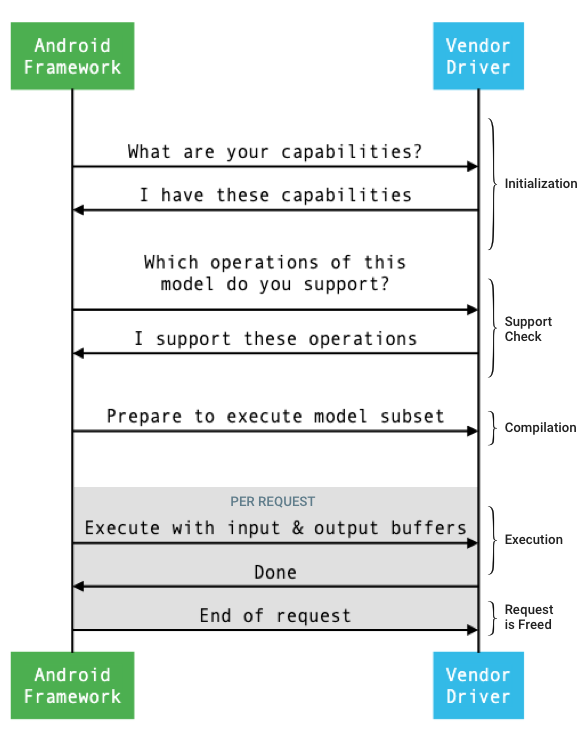

This page provides an overview of how to implement a Neural Networks API (NNAPI)
driver. For further details, see the documentation found in the HAL definition
files in
hardware/interfaces/neuralnetworks.
A sample driver implementation is in
frameworks/ml/nn/driver/sample.
For more information on the Neural Networks API, see Neural Networks API.
Neural Networks HAL
The Neural Networks (NN) HAL defines an abstraction of the various devices,
such as graphics processing units (GPUs) and digital signal processors (DSPs),
that are in a product (for example, a phone or tablet). The drivers for these
devices must conform to the NN HAL. The interface is specified in the HAL
definition files in
hardware/interfaces/neuralnetworks.
The general flow of the interface between the framework and a driver is depicted in figure 1.

Figure 1. Neural Networks flow
Initialization
At initialization, the framework queries the driver for its capabilities using
IDevice::getCapabilities_1_2
in IDevice.hal (or
getCapabilities_1_1
for HAL 1.1 and
getCapabilities
for HAL 1.0). The @1.2::Capabilities structure includes all data types and
represents nonrelaxed performance using a vector.
To determine how to allocate computations to the available devices, the framework uses the capabilities to understand how quickly and how energy efficiently each driver can perform an execution. To provide this information, the driver must provide standardized performance numbers based on the execution of reference workloads.
To determine the values that the driver returns in response to
IDevice::getCapabilities_1_2, use the NNAPI benchmark app to measure the
performance for corresponding data types. The MobileNet v1 and v2, asr_float,
and tts_float models are recommended for measuring performance for 32-bit
floating point values and the MobileNet v1 and v2 quantized models are
recommended for 8-bit quantized values. For more information, see
Android Machine Learning Test Suite.
In Android 9 and lower, the Capabilities structure includes driver performance
information only for floating point and quantized tensors and doesn't include
scalar data types.
As part of the initialization process, the framework may query more information,
using
IDevice::getType,
IDevice::getVersionString,
IDevice:getSupportedExtensions,
and
IDevice::getNumberOfCacheFilesNeeded.
Between product reboots, the framework expects all queries described in this section to always report the same values for a given driver. Otherwise, an app using that driver may exhibit reduced performance or incorrect behavior.
Compilation
The framework determines which devices to use when it receives a request from an app. In Android 10, apps can discover and specify the devices that the framework picks from. For more information, see Device Discovery and Assignment.
At model compilation time, the framework sends the model to each candidate
driver by calling
IDevice::getSupportedOperations_1_2
(or
getSupportedOperations_1_1
for HAL 1.1 and
getSupportedOperations
for HAL 1.0). Each driver returns an array of booleans indicating which
operations of the model are supported. A driver can determine that it can't
support a given operation for a number of reasons. For example:
- The driver doesn't support the data type.
- The driver only supports operations with specific input parameters. For example, a driver might support 3x3 and 5x5, but not 7x7 convolution operations.
- The driver has memory constraints preventing it from handling large graphs or inputs.
During compilation, the input, output, and internal operands of the model, as
described in
OperandLifeTime,
can have unknown dimensions or rank. For more information, see
Output shape.
The framework instructs each selected driver to prepare to execute a subset of
the model by calling
IDevice::prepareModel_1_2
or
prepareModelFromCache
(or
prepareModel_1_1
for HAL 1.1 and
prepareModel
for HAL 1.0). Each driver then compiles its subset. For example, a driver might
generate code or create a reordered copy of the weights. Because there can be a
significant amount of time between the compilation of the model and the
execution of requests, resources such as large chunks of device memory shouldn't
be assigned during compilation.
On success, the driver returns an
@1.2::IPreparedModel
(or
@1.0::IPreparedModel)
handle. If the driver returns a failure code when preparing its subset of the
model, the framework runs the entire model on the CPU.
To reduce the time used for compilation when an app starts, a driver can cache compilation artifacts. For more information, see Compilation Caching.
Execution
When an app asks the framework to execute a request, the framework calls
the
IPreparedModel::executeSynchronously
HAL method by default to perform a synchronous execution on a prepared model.
A request can also be executed asynchronously using the
execute_1_2
method
(execute
for drivers with NN HAL 1.1 or lower)
or executed using a
burst execution.
Synchronous execution calls improve performance and reduce threading overhead as compared to asynchronous calls because control is returned to the app process only after the execution is completed. This means that the driver doesn't need a separate mechanism to notify the app process that an execution is completed.
With the asynchronous execute_1_2 or execute method, control returns to the
app process after the execution has started, and the driver must notify
the framework when the execution is completed, using the
@1.2::IExecutionCallback
or
@1.0::IExecutionCallback
interface.
For debugging, you may want to set the debug.nn.syncexec-hal property to 0,
which tells the framework to call the asynchronous
execute_1_2
method instead of executeSynchronously because otherwise there might be no way
of running execute_1_2 from the framework.
The Request parameter passed to the execute method lists the input and output
operands used for the execution. The memory that stores the operand data must
use row-major order with the first dimension iterating the slowest and have no
padding at the end of any row. For more information about the types of operands,
see
Operands.
For NN HAL 1.2 drivers, when a request is completed, the error status, output shape, and timing information are returned to the framework. During execution, output or internal operands of the model can have one or more unknown dimensions or unknown rank. When at least one output operand has an unknown dimension or rank, the driver must return dynamically sized output information.
For drivers with NN HAL 1.1 or lower, only the error status is returned when a request is completed. The dimensions for input and output operands must be fully specified for the execution to complete successfully. Internal operands can have one or more unknown dimensions, but they must have specified rank.
For user requests that span multiple drivers, the framework is responsible for reserving intermediate memory and for sequencing the calls to each driver.
Multiple requests can be initiated in parallel on the same
@1.2::IPreparedModel
(or
@1.0::IPreparedModel).
The driver can execute requests in parallel or serialize the executions.
The framework can ask a driver to keep more than one prepared model. For
example, prepare model m1, prepare m2, execute request r1 on m1, execute
r2 on m2, execute r3 on m1, execute r4 on m2, release (described in
Cleanup) m1, and release m2.
To avoid a slow first execution that could result in a poor user experience (for example, a first frame stutter), the driver should perform most initializations in the compilation phase. Initialization on first execution should be limited to actions that negatively affect system health when performed early, such as reserving large temporary buffers or increasing the clock rate of a device. Drivers that can prepare only a limited number of concurrent models might have to do their initialization at first execution.
In Android 10, in cases where multiple executions with the same prepared model are executed in quick succession, the client may choose to use an execution burst object to communicate between app and driver processes. For more information, see Burst Executions and Fast Message Queues.
To improve performance for multiple executions in quick succession, the driver can hold on to temporary buffers or increase clock rates. Creating a watchdog thread is recommended to release resources if no new requests are created after a fixed period of time.
Output shape
For requests where one or more output operands don't have all dimensions
specified, the driver must provide a list of output shapes containing the
dimension information for each output operand after execution. For more
information on dimensions, see
types.hal.
If an execution fails because of an undersized output buffer, the driver must indicate which output operands have insufficient buffer size in the list of output shapes, and should report as much dimensional information as possible, using zero for dimensions that are unknown.
Timing
In Android 10, an app can ask for the execution
time if the app
has specified a single device to use during the compilation process. For
details, see
MeasureTiming
and Device Discovery and Assignment.
In this case, an
NN HAL 1.2 driver must measure execution duration or report UINT64_MAX (to
indicate that duration is unavailable) when executing a request. The driver
should minimize any performance penalty resulting from measuring execution
duration.
The driver reports the following durations in microseconds in the
Timing
structure:
- Execution time on device: Doesn't include execution time in the driver, which runs on the host processor.
- Execution time in the driver: Includes execution time on device.
These durations must include the time when the execution is suspended, for example, when the execution has been preempted by other tasks or when it is waiting for a resource to become available.
When the driver hasn't been asked to measure the execution duration, or when
there's an execution error, the driver must report durations as
UINT64_MAX. Even when the driver has been asked to measure the execution
duration, it can instead report UINT64_MAX for time on the device, time in the
driver, or both. When the driver reports both durations as a value other than
UINT64_MAX, the execution time in the driver must equal or exceed the time on
the device.
Cleanup
When an app is finished using a prepared model, the framework releases
its reference to the
@1.2::IPreparedModel
(or
@1.0::IPreparedModel)
object. When the IPreparedModel object is no longer referenced, it's
automatically destroyed in the driver service that created it. Model-specific
resources can be reclaimed at this time in the driver's implementation of the
destructor. If the driver service wants the IPreparedModel object to be
automatically destroyed when no longer needed by the client, it must not hold
any references to the IPreparedModel object after the IPreparedeModel object
has been returned through
IPreparedModelCallback::notify_1_2
or
IPreparedModelCallback::notify.
CPU usage
Drivers are expected to use the CPU to set up computations. Drivers shouldn't use the CPU to perform graph computations because that interferes with the ability of the framework to correctly allocate work. The driver should report the parts that it can't handle to the framework and let the framework handle the rest.
The framework provides a CPU implementation for all NNAPI operations except for vendor-defined operations. For more information, see Vendor Extensions.
The operations introduced in Android 10 (API level 29) only have a reference CPU implementation to verify that the CTS and VTS tests are correct. The optimized implementations included in mobile machine learning frameworks are preferred over the NNAPI CPU implementation.
Utility functions
The NNAPI codebase includes utility functions that can be used by driver services.
The
frameworks/ml/nn/common/include/Utils.h
file contains assorted utility functions, such as those used for logging and
for converting between different NN HAL versions.
VLogging:
VLOGis a wrapper macro around Android'sLOGthat only logs the message if the appropriate tag is set in thedebug.nn.vlogproperty.initVLogMask()must be called before any calls toVLOG. TheVLOG_IS_ONmacro can be used to check ifVLOGis currently enabled, enabling complicated logging code to be skipped if it's not needed. The value of the property must be one of the following:- An empty string, indicating that no logging is to be done.
- The token
1orall, indicating that all logging is to be done. - A list of tags, delimited by spaces, commas, or colons,
indicating which logging is to be done. The tags are
compilation,cpuexe,driver,execution,manager, andmodel.
compliantWithV1_*: Returnstrueif an NN HAL object can be converted to the same type of a different HAL version without losing information. For example, callingcompliantWithV1_0on aV1_2::Modelreturnsfalseif the model includes operation types introduced in NN HAL 1.1 or NN HAL 1.2.convertToV1_*: Converts an NN HAL object from one version to another. A warning is logged if the conversion results in a loss of information (that is, if the new version of the type cannot fully represent the value).Capabilities: The
nonExtensionOperandPerformanceandupdatefunctions can be used to help build theCapabilities::operandPerformancefield.Querying properties of types:
isExtensionOperandType,isExtensionOperationType,nonExtensionSizeOfData,nonExtensionOperandSizeOfData,nonExtensionOperandTypeIsScalar,tensorHasUnspecifiedDimensions.
The
frameworks/ml/nn/common/include/ValidateHal.h
file contains utility functions for validating that an NN HAL object is valid
according to its HAL version's specification.
validate*: Returnstrueif the NN HAL object is valid according to its HAL version's specification. OEM types and extension types aren't validated. For example,validateModelreturnsfalseif the model contains an operation that references an operand index that doesn't exist, or an operation that isn't supported at that HAL version.
The
frameworks/ml/nn/common/include/Tracing.h
file contains macros to simplify adding
systracing information to Neural Networks code.
For an example, see the NNTRACE_* macro invocations in the
sample driver.
The
frameworks/ml/nn/common/include/GraphDump.h
file contains a utility function to dump the content of a Model in graphical
form for debugging purposes.
graphDump: Writes a representation of the model in Graphviz (.dot) format to the specified stream (if provided) or to the logcat (if no stream is provided).
Validation
To test your implementation of the NNAPI, use the VTS and CTS tests included in the Android framework. VTS exercises your drivers directly (without using the framework), whereas CTS exercises them indirectly through the framework. These test each API method and verify that all operations supported by the drivers work correctly and provide results that meet the precision requirements.
The precision requirements in CTS and VTS for the NNAPI are as follows:
Floating-point: abs(expected - actual) <= atol + rtol * abs(expected); where:
- For fp32, atol = rtol = 1e-5f
- For fp16, atol = rtol = 5.0f * 0.0009765625f
Quantized: off-by-one (except for
mobilenet_quantized, which is off-by-two)Boolean: exact match
One way CTS tests NNAPI is by generating fixed pseudorandom graphs
used to test and compare the
execution results from each driver with the NNAPI reference implementation. For
drivers with NN HAL 1.2 or higher, if the results don't meet the precision
criteria, CTS reports an error and dumps a specification file for the failed
model under /data/local/tmp for debugging. For more details about the
precision criteria, see
TestRandomGraph.cpp
and
RandomGraphGenerator.h.
Security
Because app processes communicate directly with a driver's process,
drivers must validate the arguments of the calls they receive. This validation
is verified by VTS. The validation code is in
frameworks/ml/nn/common/include/ValidateHal.h.
Drivers should also ensure that apps can't interfere with other apps when using the same device.
Android Machine Learning Test Suite
The Android Machine Learning Test Suite (MLTS) is an NNAPI benchmark included in CTS and VTS for validating the accuracy of real models on vendor devices. The benchmark evaluates latency and accuracy, and compares the drivers' results with the results using TF Lite running on the CPU, for the same model and datasets. This ensures that a driver's accuracy isn't worse than the CPU reference implementation.
Android platform developers also use MLTS to evaluate the latency and accuracy of drivers.
The NNAPI benchmark can be found in two projects in AOSP:
platform/test/mlts/benchmark(benchmark app)platform/test/mlts/models(models and datasets)
Models and datasets
The NNAPI benchmark uses the following models and datasets.
- MobileNetV1 float and u8 quantized in different sizes, run against a small subset (1500 images) of Open Images Dataset v4.
- MobileNetV2 float and u8 quantized in different sizes, run against a small subset (1500 images) of Open Images Dataset v4.
- Long short-term memory (LSTM) based acoustic model for text-to-speech, run against a small subset of the CMU Arctic set.
- LSTM based acoustic model for automatic speech recognition, run against a small subset of the LibriSpeech dataset.
For more information, see
platform/test/mlts/models.
Using MLTS
To use the MLTS:
- Connect a target device to your workstation and make sure it's
reachable through
adb.
Export the target device
ANDROID_SERIALenvironment variable if more than one device is connected. cdinto the Android top-level source directory.source build/envsetup.sh lunch aosp_arm-userdebug # Or aosp_arm64-userdebug if available. ./test/mlts/benchmark/build_and_run_benchmark.shAt the end of a benchmark run, the results are presented as an HTML page and passed to
xdg-open.
For more information, see
platform/test/mlts/benchmark/README.txt.
Neural Networks HAL versions
This section describes the changes introduced in Android and Neural Networks HAL versions.
Android 10
Android 10 introduces NN HAL 1.2, which includes the following notable changes.
- The
Capabilitiesstruct includes all data types including scalar data types, and represents nonrelaxed performance using a vector rather than named fields. - The
getVersionStringandgetTypemethods allow the framework to retrieve device type (DeviceType) and version information. See Device Discovery and Assignment. - The
executeSynchronouslymethod is called by default to perform an execution synchronously. Theexecute_1_2method tells the framework to perform an execution asynchronously. See Execution. - The
MeasureTimingparameter toexecuteSynchronously,execute_1_2, and burst execution specifies whether the driver is to measure execution duration. The results are reported in theTimingstructure. See Timing. - Support for executions where one or more output operands have an unknown dimension or rank. See Output shape.
- Support for vendor extensions, which are collections of vendor-defined
operations and data types. The driver reports supported extensions through
the
IDevice::getSupportedExtensionsmethod. See Vendor Extensions. - Ability for a burst object to control a set of burst executions using fast message queues (FMQs) to communicate between app and driver processes, reducing latency. See Burst Executions and Fast Message Queues.
- Support for AHardwareBuffer to allow the driver to perform executions without copying data. See AHardwareBuffer.
- Improved support for caching of compilation artifacts to reduce the time used for compilation when an app starts. See Compilation Caching.
Android 10 introduces the following operand types and operations.
-
ANEURALNETWORKS_BOOLANEURALNETWORKS_FLOAT16ANEURALNETWORKS_TENSOR_BOOL8ANEURALNETWORKS_TENSOR_FLOAT16ANEURALNETWORKS_TENSOR_QUANT16_ASYMMANEURALNETWORKS_TENSOR_QUANT16_SYMMANEURALNETWORKS_TENSOR_QUANT8_SYMMANEURALNETWORKS_TENSOR_QUANT8_SYMM_PER_CHANNEL
-
ANEURALNETWORKS_ABSANEURALNETWORKS_ARGMAXANEURALNETWORKS_ARGMINANEURALNETWORKS_AXIS_ALIGNED_BBOX_TRANSFORMANEURALNETWORKS_BIDIRECTIONAL_SEQUENCE_LSTMANEURALNETWORKS_BIDIRECTIONAL_SEQUENCE_RNNANEURALNETWORKS_BOX_WITH_NMS_LIMITANEURALNETWORKS_CASTANEURALNETWORKS_CHANNEL_SHUFFLEANEURALNETWORKS_DETECTION_POSTPROCESSINGANEURALNETWORKS_EQUALANEURALNETWORKS_EXPANEURALNETWORKS_EXPAND_DIMSANEURALNETWORKS_GATHERANEURALNETWORKS_GENERATE_PROPOSALSANEURALNETWORKS_GREATERANEURALNETWORKS_GREATER_EQUALANEURALNETWORKS_GROUPED_CONV_2DANEURALNETWORKS_HEATMAP_MAX_KEYPOINTANEURALNETWORKS_INSTANCE_NORMALIZATIONANEURALNETWORKS_LESSANEURALNETWORKS_LESS_EQUALANEURALNETWORKS_LOGANEURALNETWORKS_LOGICAL_ANDANEURALNETWORKS_LOGICAL_NOTANEURALNETWORKS_LOGICAL_ORANEURALNETWORKS_LOG_SOFTMAXANEURALNETWORKS_MAXIMUMANEURALNETWORKS_MINIMUMANEURALNETWORKS_NEGANEURALNETWORKS_NOT_EQUALANEURALNETWORKS_PAD_V2ANEURALNETWORKS_POWANEURALNETWORKS_PRELUANEURALNETWORKS_QUANTIZEANEURALNETWORKS_QUANTIZED_16BIT_LSTMANEURALNETWORKS_RANDOM_MULTINOMIALANEURALNETWORKS_REDUCE_ALLANEURALNETWORKS_REDUCE_ANYANEURALNETWORKS_REDUCE_MAXANEURALNETWORKS_REDUCE_MINANEURALNETWORKS_REDUCE_PRODANEURALNETWORKS_REDUCE_SUMANEURALNETWORKS_RESIZE_NEAREST_NEIGHBORANEURALNETWORKS_ROI_ALIGNANEURALNETWORKS_ROI_POOLINGANEURALNETWORKS_RSQRTANEURALNETWORKS_SELECTANEURALNETWORKS_SINANEURALNETWORKS_SLICEANEURALNETWORKS_SPLITANEURALNETWORKS_SQRTANEURALNETWORKS_TILEANEURALNETWORKS_TOPK_V2ANEURALNETWORKS_TRANSPOSE_CONV_2DANEURALNETWORKS_UNIDIRECTIONAL_SEQUENCE_LSTMANEURALNETWORKS_UNIDIRECTIONAL_SEQUENCE_RNN
Android 10 introduces updates to many of the existing operations. The updates are mainly related to the following:
- Support for the NCHW memory layout
- Support for tensors with rank different than 4 in softmax and normalization operations
- Support for dilated convolutions
- Support for inputs with mixed quantization in
ANEURALNETWORKS_CONCATENATION
The list below shows the operations that are modified in Android 10. For full details of the changes, see OperationCode in the NNAPI reference documentation.
ANEURALNETWORKS_ADDANEURALNETWORKS_AVERAGE_POOL_2DANEURALNETWORKS_BATCH_TO_SPACE_NDANEURALNETWORKS_CONCATENATIONANEURALNETWORKS_CONV_2DANEURALNETWORKS_DEPTHWISE_CONV_2DANEURALNETWORKS_DEPTH_TO_SPACEANEURALNETWORKS_DEQUANTIZEANEURALNETWORKS_DIVANEURALNETWORKS_FLOORANEURALNETWORKS_FULLY_CONNECTEDANEURALNETWORKS_L2_NORMALIZATIONANEURALNETWORKS_L2_POOL_2DANEURALNETWORKS_LOCAL_RESPONSE_NORMALIZATIONANEURALNETWORKS_LOGISTICANEURALNETWORKS_LSH_PROJECTIONANEURALNETWORKS_LSTMANEURALNETWORKS_MAX_POOL_2DANEURALNETWORKS_MEANANEURALNETWORKS_MULANEURALNETWORKS_PADANEURALNETWORKS_RELUANEURALNETWORKS_RELU1ANEURALNETWORKS_RELU6ANEURALNETWORKS_RESHAPEANEURALNETWORKS_RESIZE_BILINEARANEURALNETWORKS_RNNANEURALNETWORKS_ROI_ALIGNANEURALNETWORKS_SOFTMAXANEURALNETWORKS_SPACE_TO_BATCH_NDANEURALNETWORKS_SPACE_TO_DEPTHANEURALNETWORKS_SQUEEZEANEURALNETWORKS_STRIDED_SLICEANEURALNETWORKS_SUBANEURALNETWORKS_SVDFANEURALNETWORKS_TANHANEURALNETWORKS_TRANSPOSE
Android 9
NN HAL 1.1 is introduced in Android 9 and includes the following notable changes.
IDevice::prepareModel_1_1includes anExecutionPreferenceparameter. A driver can use this to adjust its preparation, knowing that the app prefers to conserve battery or will be executing the model in quick successive calls.- Nine new operations have been added:
BATCH_TO_SPACE_ND,DIV,MEAN,PAD,SPACE_TO_BATCH_ND,SQUEEZE,STRIDED_SLICE,SUB,TRANSPOSE. - An app can specify that 32-bit float computations can be run
using 16-bit float range and/or precision by setting
Model.relaxComputationFloat32toFloat16totrue. TheCapabilitiesstruct has the additional fieldrelaxedFloat32toFloat16Performanceso that the driver can report its relaxed performance to the framework.
Android 8.1
The initial Neural Networks HAL (1.0) was released in Android 8.1. For more
information, see
/neuralnetworks/1.0/.